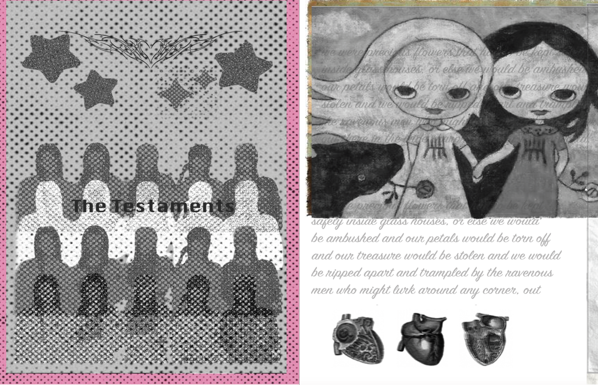
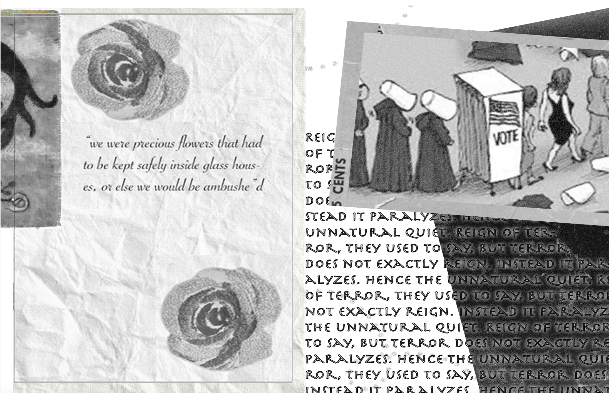
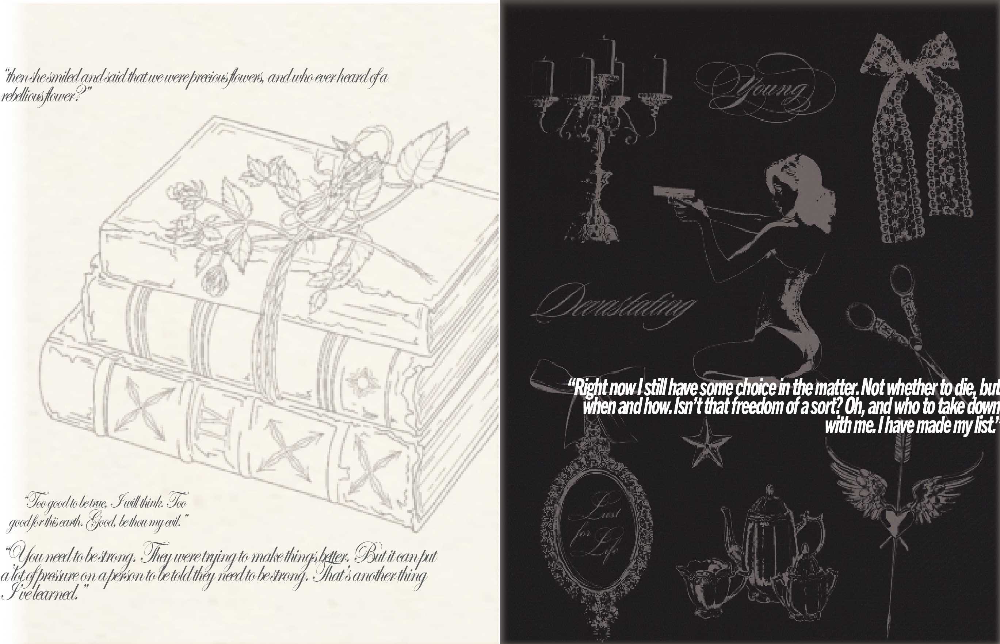
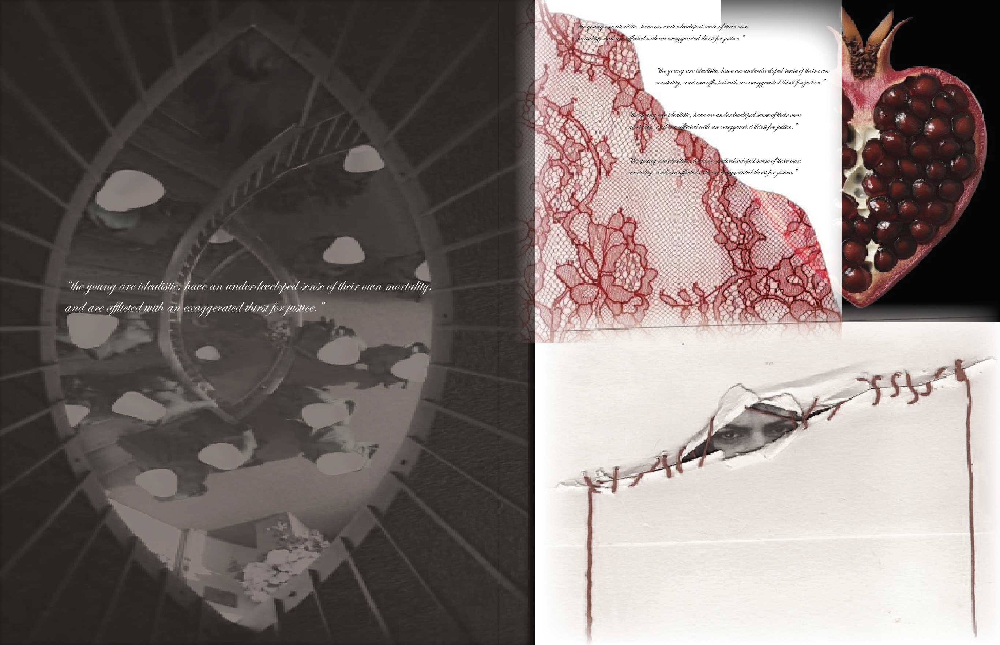
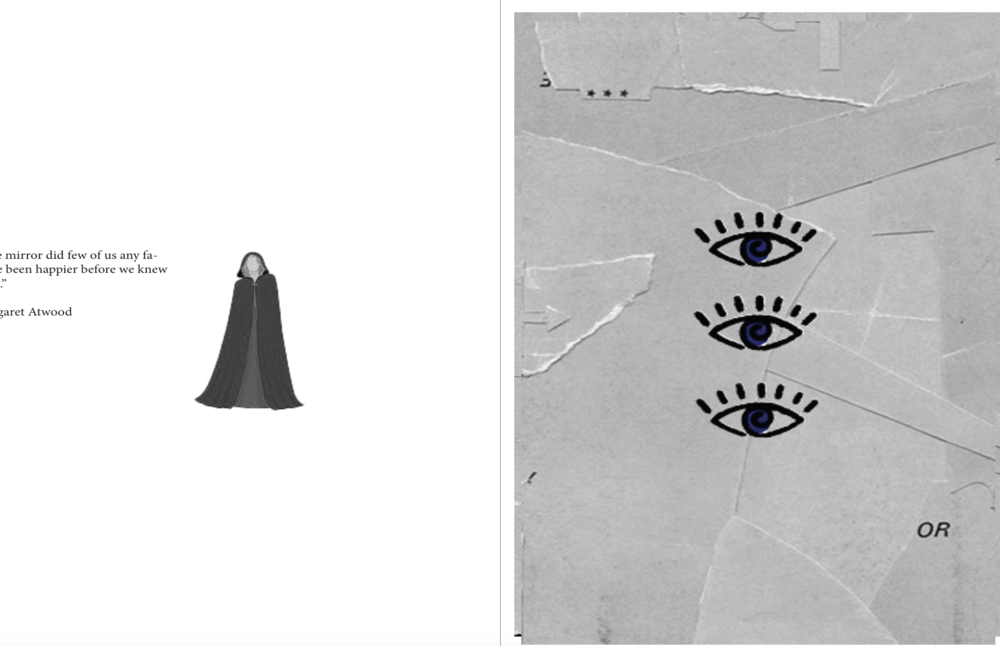
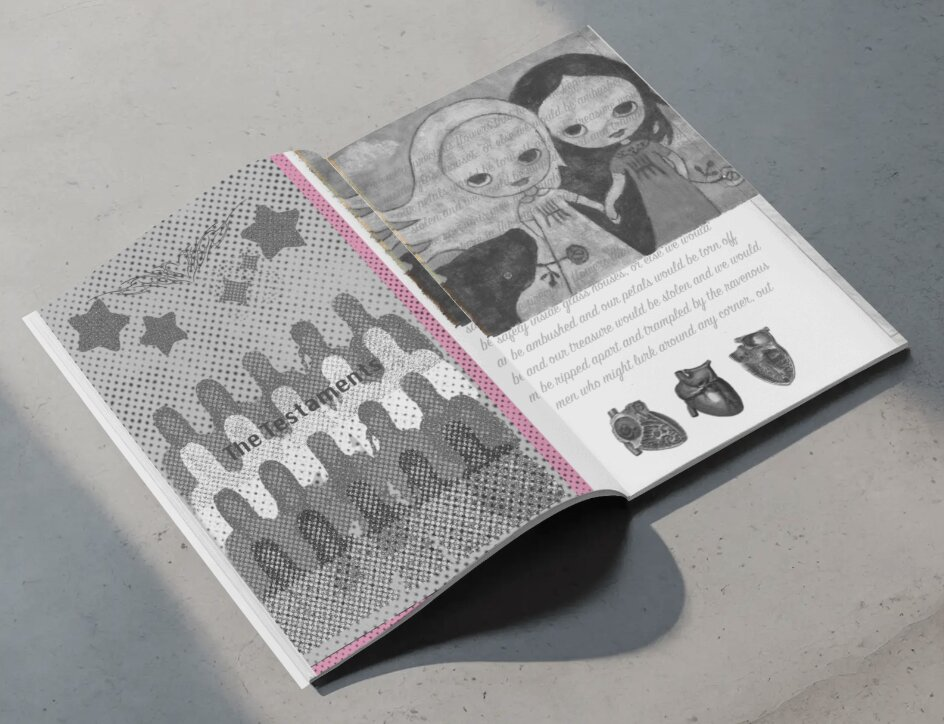
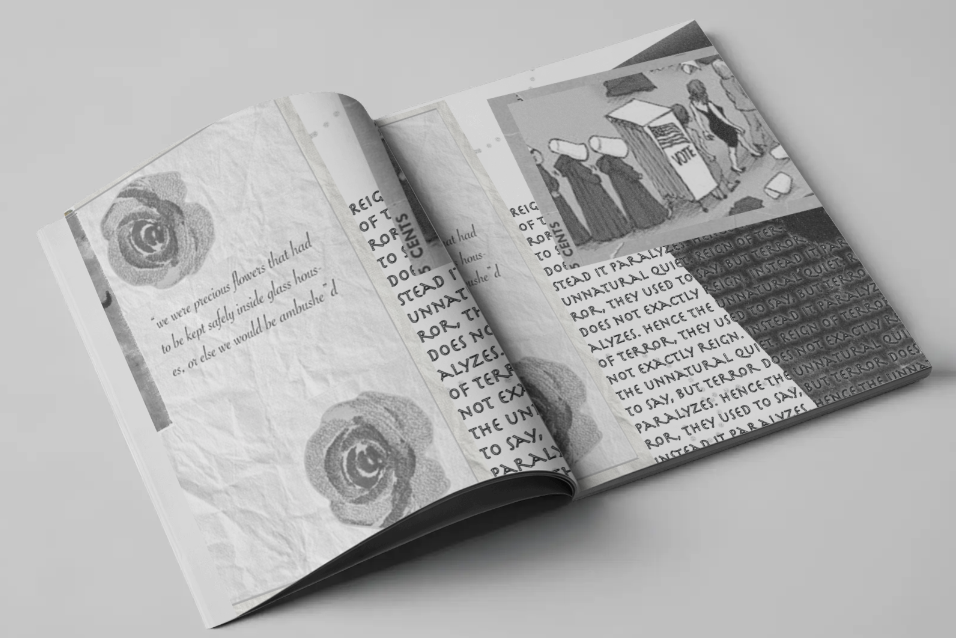

EDITORIAL · RESEARCH · INSTALLATION
The Testaments
The Testaments is an 8-page print literature zine inspired by Margaret Atwood’s novel, exploring its themes through a creative and interpretive approach. Drawing from Yoshitomo Nara’s artwork, the zine combines playful imagery with the darker themes of the story to create a visual contrast. Through a mix of text, illustration, and editorial layouts, the project reinterprets the novel in a way that encourages readers to engage with both its story and themes.
ROLE
Designer & Researcher
TOOLS
InDesign · Photoshop
PROCESS
Research · Editorial · Installation








PROJECT